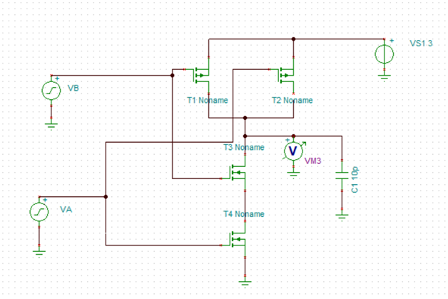
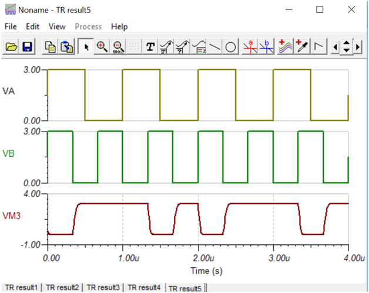

Lab-12
Transient Analysis of NAND gate using
SPICE (TINA) .
Software Required:
1. TINA-9.2 (can be downloaded freely)
2. PC in Windows Platform
Procedure:
Same as Lab-10 and 11. Design the circuit as per diagram. Do not forget
to rotate PMOS vertically as per diagram.

1. Open TINA-9 in
computer and design the schematic as shown in diagram. You have to rotate
and mirror PMOS transistors.
2. Change each MOSFET type to BSIM-3 model from
component property window under “type” tab.
3. In property window of MOSFET, select Length L=1u and
width W=10u for all MOSFET.
4. Rename the input voltage as VA and VB under property
tab. Select type as square wave with DC level 1.5V. Under square wave
option, select amplitude 1.5V, frequency 1M (1MHZ) and rise/fall time as
default 1n. Do the same for source VB but take different frequency such as
1.5M.
5. Select supply voltage VS1 value to 3Volt as
shown in fig.
6. Connect one load capacitor of value 10pf to 100pf
range at the output node as shown in Fig.
7. Connect one voltmeter to display output voltage.
8. For more details settings/how to change/select MOSFET
model etc. see previous expt. manual (CMOS inverter).
9. When circuit is completed and ready for simulation
then go to Analysis -> transient -> set end display time to 4u (4
micro sec).
10. Go to View-> separate curve option from display
window (graph) to display each wave separately. Now verify the truth table
of NAND gate.
